There are amazing places that became tourist attractions for its
exquisite and unique scenery.
“Travel makes one modest. You see what a tiny place you occupy in the world.”
(Gustave Flaubert)
FLAUBERT, Gustave.
The letters of Gustave Flaubert: 1830-1857
. Francis Steegmuller (Trad.). Cambridge: Belknap Press/Harvard University Press, 1980. p.
181.
Getting to know different cultures and the way people think in other regions can help you
open your mind to new ideas and ways of living, transforming you into a more thoughtful
human being. Spending time away from home makes you leave your comfort zone and adopt new
habits.
For instance, if you travel to a different state in your own country,
you may face some challenges, such as eating exotic meals or listening to people speak with
a different accent and use words you are not familiar with. As you visit a foreign country,
you may need to experience contrasting customs, communicate in another language, get used to
a distinctive weather, and so on. Overcoming the difficulties may increase your self-esteem
and make you proud of yourself!
According to neurologist José Manuel Molto, member of the SENC (Spanish
Society of Neuroscience), it is important to train and stimulate your brain so that neurons
can create new connections throughout life, which may keep your brain young. Simple
situations provided by traveling, such as adapting to new sensations, landscapes, sounds and
aromas, can be invigorating to your gray matter and make your brain more plastic and
creative.•
Do you know the places in the pictures? Can you describe them briefly? How do they
differ from each other?•
Is there a place on the planet you would really like to visit? What is so special
about it?•
What do you enjoy doing when you travel? What can you learn when visiting new
places?
Neste capítulo serão abordadas as habilidades
EM13LGG301
EM13LGG402
EM13LGG403
.
Dive in
Imagine you are planning a trip, but don't know where to go yet.
Read the comments written by the users Karinaciranda, rafamoralles,
yara_xd and Jackson.rhymes on their social media, find out about these
amazing places and choose your next dream trip!
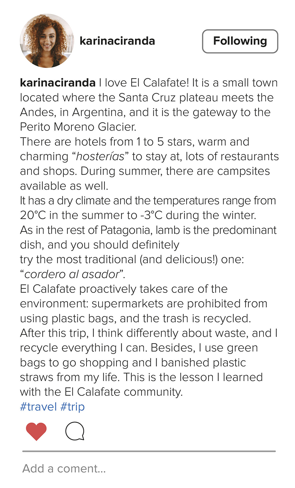
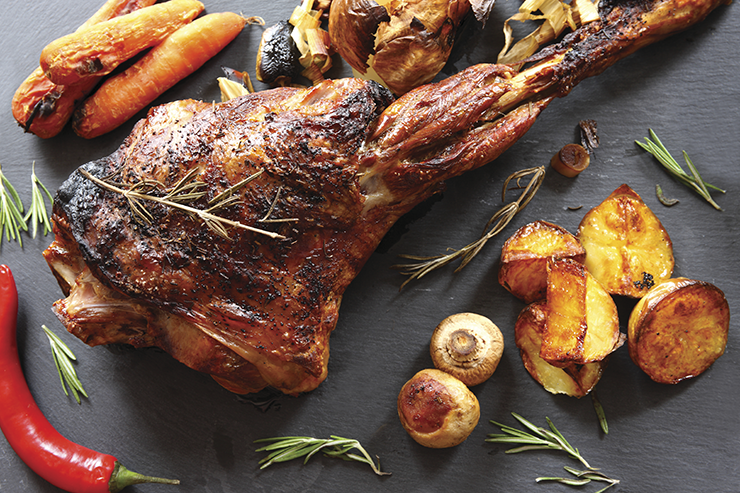
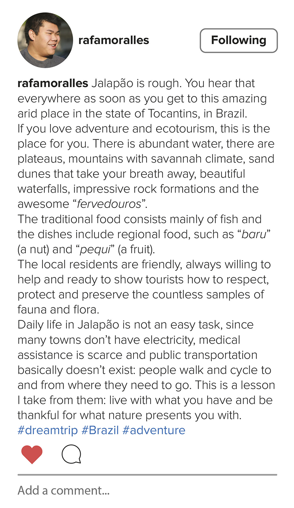
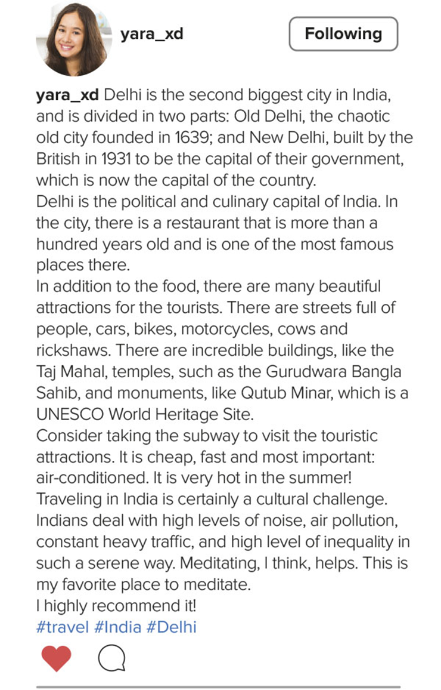
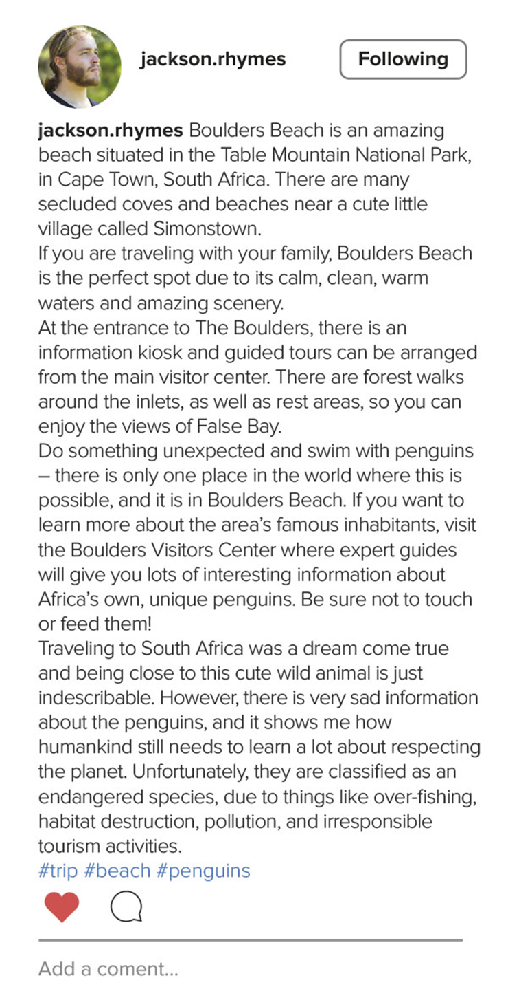
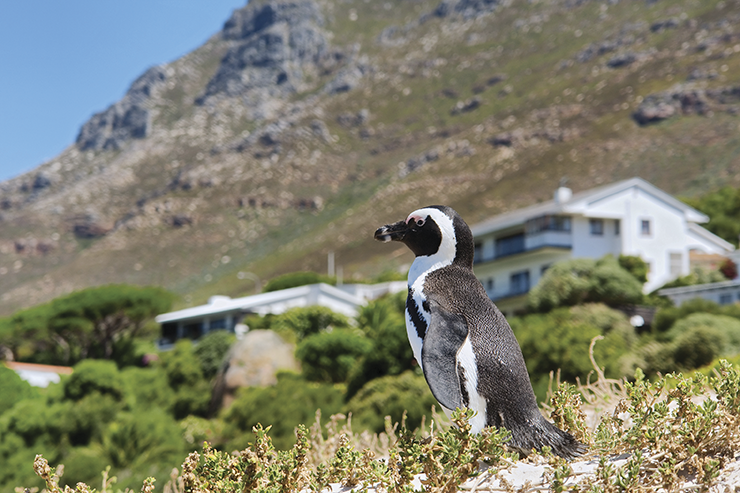
There be: Simple Present tense
Read this excerpt from the text and examine the underlined expression.
In English, we use
there be
to:
( ) refer to the existence or presence of someone or something.
( ) talk about daily routines.
( ) talk about actions when we travel
Singular
Affirmative form:
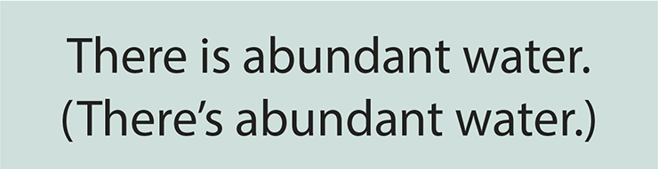
Negative form:
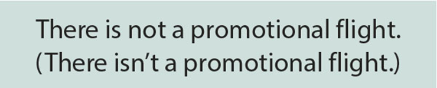
Yes/No question:
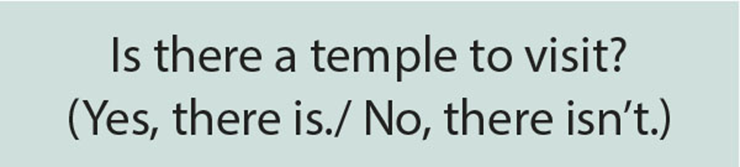
Information question:
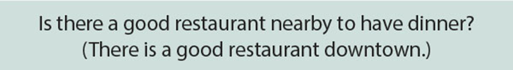
Plural
Affirmative form:
Negative form:
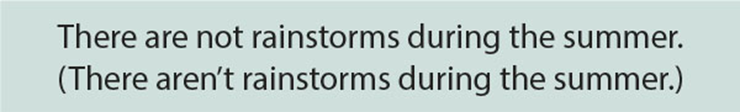
Yes/No question:
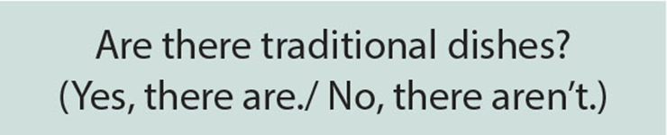
Information question:
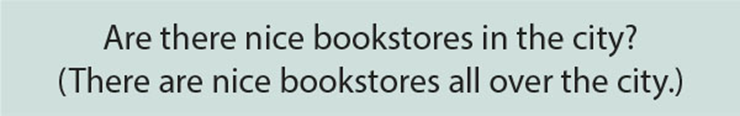
Go further
Flaubert in Egypt: a sensibility on tour
Gustave Flaubert. London: Penguin Books, 1996.
Flaubert kept a journal on his travels, and the one he wrote while he was in the
Orient has become a literary classic. It was first published in English as
Flaubert in Egypt
(with the subtitle
A Sensibility on Tour
) and it has been republished over the years as a Penguin Classic.
We must use there is/there are only when we are talking about things
that exist, and to which we do not attribute property
For example: There are many beatiful attractions for the tourists
in this sentense, we find out about the existence of beautiful attractions in the
place. However, when we refer to possession, we use the verb have For
instance: I have a small family Bridget and Sam don't have money to travel every month lilly has a great bike that she usess to go to work
Grammaring
1
Which dream trip did you choose? Why?
2
Read the travel posts one more time and write T (true) and F (false)
for each statement. Correct the false statements.
( ) People go camping in the winter in El Calafate.
( ) Supermarkets in Patagonia offer plastic bags for the tourists who don’t have
ecological bags.
( ) Local residents in Jalapão are concerned about the environment.
( ) In Jalapão, bicycles are important means of transportation.
( ) Old Delhi is the capital of India.
( ) There aren’t subways available for tourists to visit attractions in Delhi.
( ) Air pollution is one of the problems that affect India.
( ) Visiting a penguin colony in South Africa is prohibited during some periods of the
year.
( ) The penguins’ population in South Africa has diminished over the years.
3
Fill in the blanks with there be
____________________ many waterfalls to visit in that part of the country.
You must leave home early, because ____________________ traffic on the streets
____________________ wild animals at the zoo?
If you get hungry, ____________________ food in the fridge.
____________________ snow during the winter in Chile?
Don’t worry, ____________________ always something good in the end!
_____________________ a movie theater at the shopping mall.
How much condensed milk _________________ in the cupboard?
It’s a beautiful night! ______________________ so many stars in the sky!
_______________________ great women who command great companies in Brazil.
4
Ask questions with there be according to the answers given.
Yes, there are. They are so delicious!
There is a pink jacket on the sofa.
Yes, there is. It is one of the tallest buildings in the city.
There are two good shows on TV tonight.
No, there isn’t. If you want to go to the mall, you must go to the next town.
There is a newsstand on the corner.
No, there aren’t. All the movie theaters are old.
There are a lot of posters on the wall.
5
Fill in the blanks with the correct form of there be or have.
____________________ some people in the room, they are setting the table.
____________________ two English tests Today.
I don’t know if ____________________ a lipstick in my purse, I can’t find it.
Do you know that Mrs. Klein ____________________ three daughters?
____________________ so many redwood trees on the campus.
Sorry, I can’t go to the concert with you. I ____________________no money with me.
____________________ a cute cat staring at us, look!
I ____________________ ten dollars, but it is not enough, we’ll need some more cash.
____________________ a pen on the desk. Is it yours?
A dog ____________________ four legs. How many legs does a platypus have?
Dive in
A global emergency: the new coronavirus
Lab card kit test for coronavirus
(Sars-CoV-2 virus).
As 2019 concluded, reports to the World Health Organization (WHO) warned
about several cases of pneumonia of unknown causes in Wuhan City, China.
After scientists have identified the causative virus and discovered that it
is a pathogen belonging to the family of other viruses, such as the causer of the first
SARS (Severe Acute Respiratory Syndrome) in 2002 in China and MERS (Middle Eastern
Respiratory Syndrome) in Saudi Arabia, they named it
New Coronavirus 2019
.
Just as SARS had its origin in the
civet cats
and MERS in the camel, it is believed that the new coronavirus originated in the bat, an
intermediate host, and facilitator of virus transmission to humans.
In 2020, WHO declared the coronavirus pandemic, as a result of the increment
numbers of confirmed cases and deaths around the world. After that statement, the whole
world started a race for the vaccine that would immunize us against the Coronavirus 19.
Civet cats:
nocturnal mammal native to tropical forests from Asia and Africa.
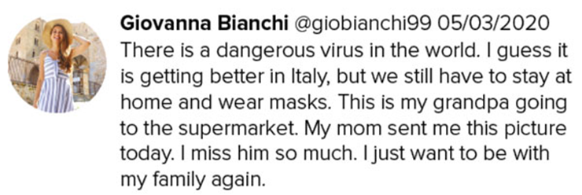
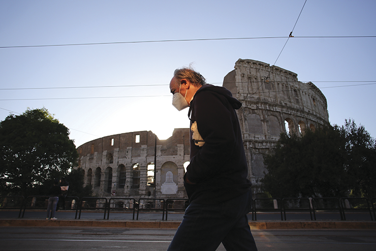
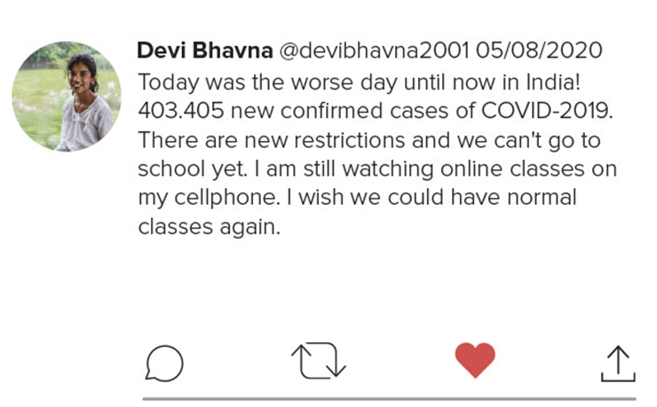
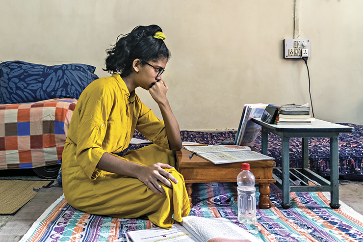
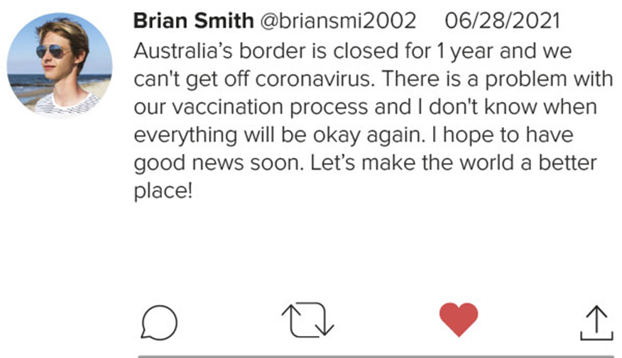
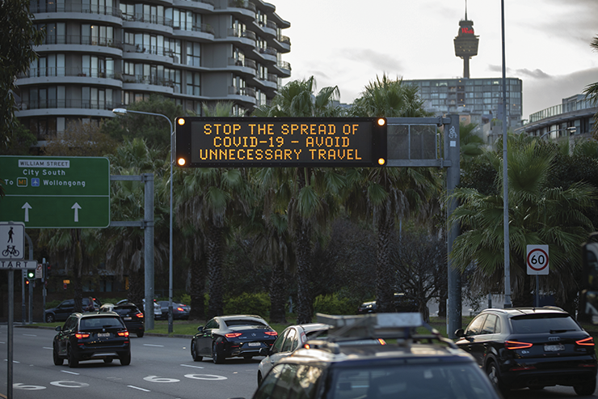
Watch out!!
Covid-19: take steps to protect yourself and others
We can prevent the spread of COVID-19 with basic actions during our day:
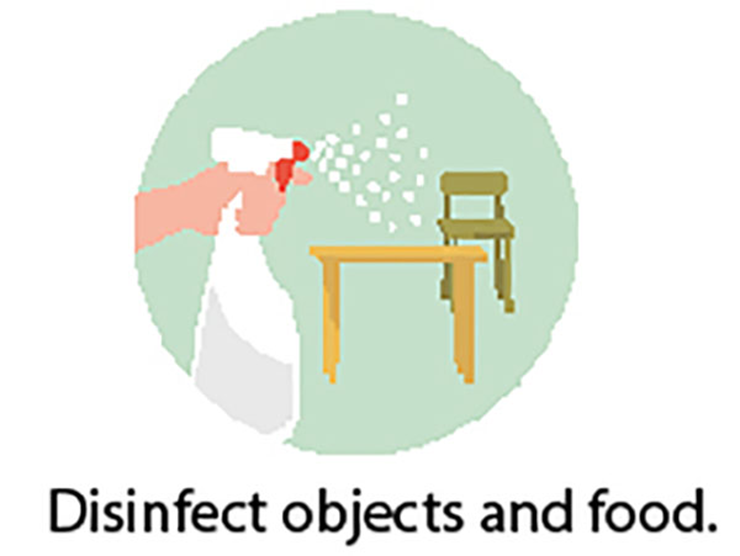
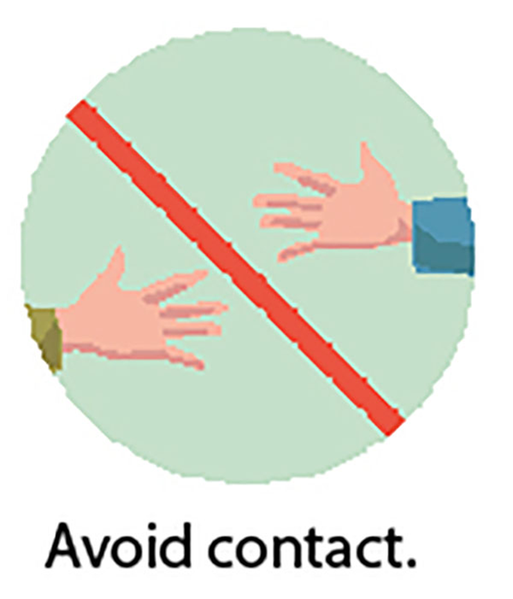
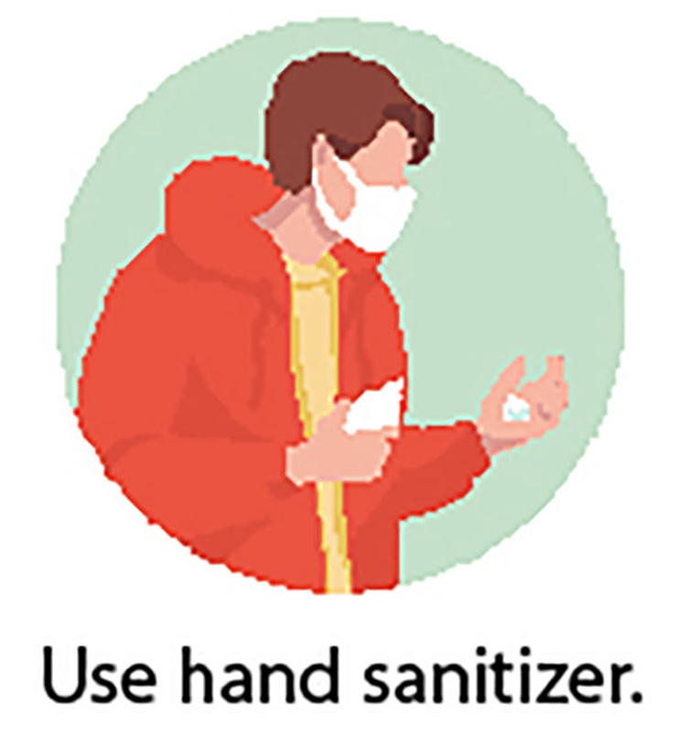
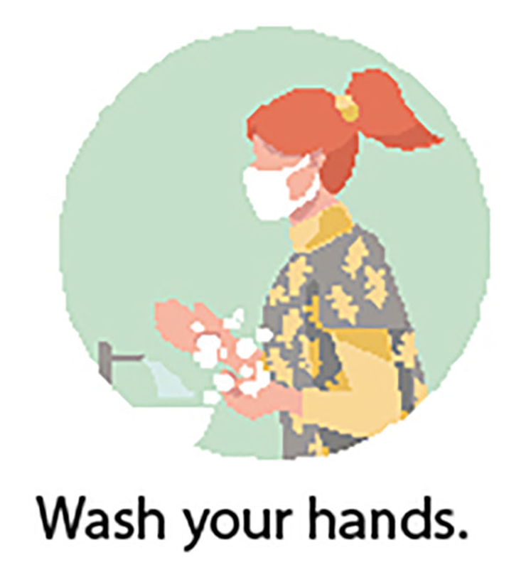
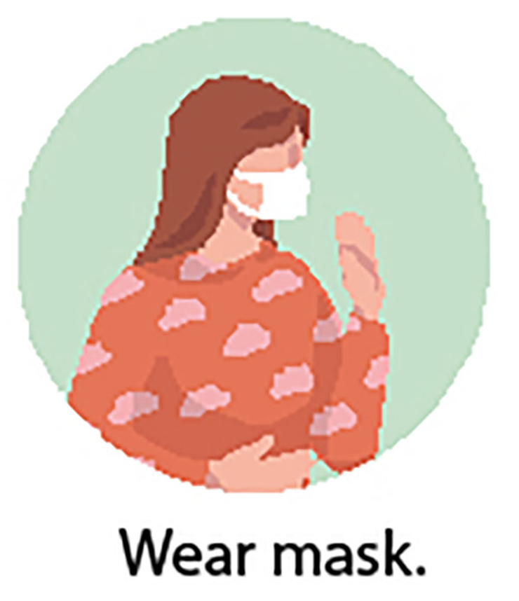
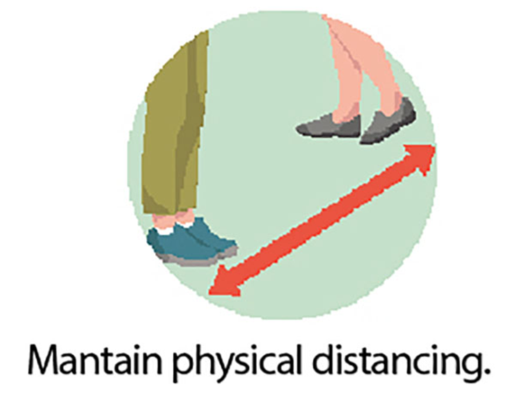
Grammaring
6
Now it is your turn! Search and write a comment about coronavirus in Brazil.
Tip: A good practice is spending time thinking about you would like to write!
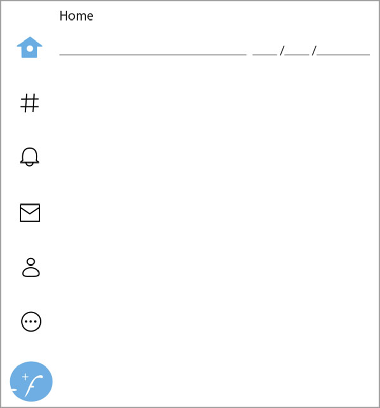
7
Spread your opinion by posting your comment on a social media account.
Tip: Engage in civil discourse and be respectful!
Go further
Read more about COVID-19 on:
BBC News – Coronavirus
. Availabe at: https://www.bbc.com/news/coronavirus. World Health Organization (WHO). Coronavirus disease.
Available at: https://www.who.int/health-topics/coronavirus#tab=tab_1.
(All sites accessed on July 14th, 2021.)
PRACTICE IT!
1
Mackenzie-SP 2019
Read the comic strip and select the option that best interprets it.
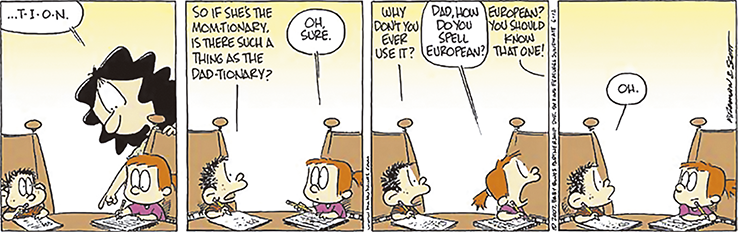
Dad is not at home
The kids shouldn’t ask their dad questions because he doesn’t answer them.
Mom-tionary is a word in the dictionary.
The kids know how to spell European.
The kids can use both mom-tionary and dad-tionary!
2
Fatec 2019
Analise a charge abaixo.
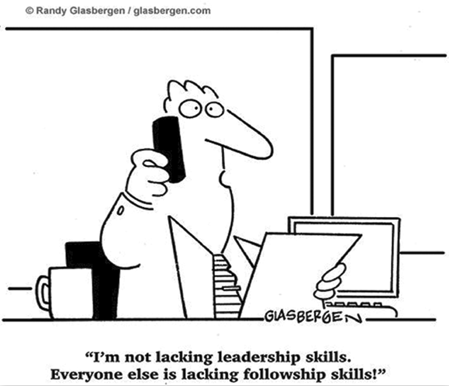
As expressões
I’m not lacking leadership
e
Everyone else is lacking
, para expressar o sarcasmo da charge, demonstram que o profissional em questão
acredita ser um bom líder.
sente falta de seus funcionários.
se importa com seus funcionários.
tem dificuldade de ser comandado.
ignora a habilidade de liderança de seus funcionários.
3
Unifesp 2019
Examine a tira de Steinberg, publicada em seu Instagram no dia 20.08.2018.
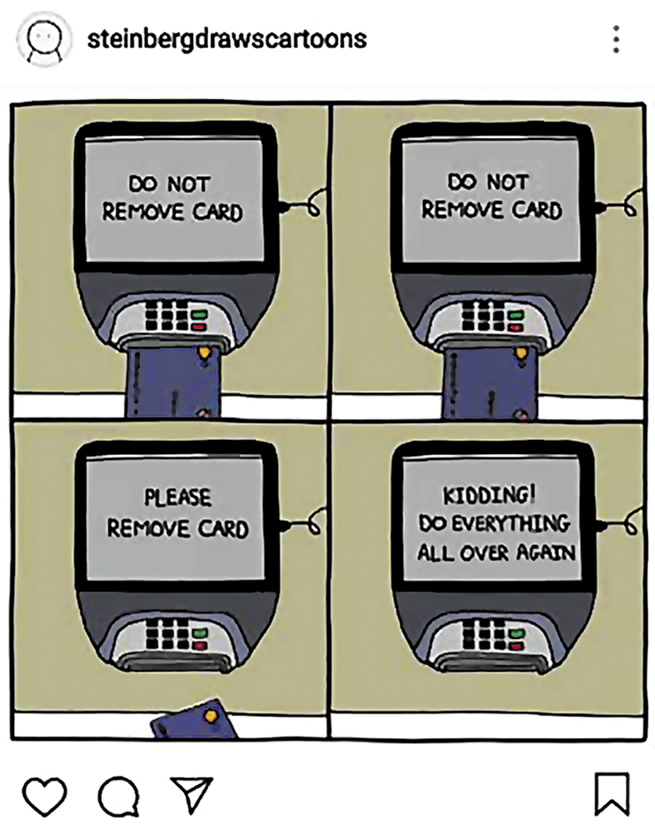
Colabora para o efeito de humor da tira o recurso à figura de linguagem denominada
eufemismo.
pleonasmo.
hipérbole.
personificação.
sinestesia.
Brain teaser
EPCar-MG 2016
Texto para as questões 1 a 6.
THE RELATIONSHIP BETWEEN FRIENDS AND TYPES OF FRIENDSHIP
Everyone has at least one best friend, some maybe even more. There are also those people who are just friends and also arch-enemies. People may think that just because they are your friends it means that they are your best friend. The thing is, even though they are your friend, the relationship between a best friend and a friend is different. Either way regardless of arch-enemies, friends or best friends, there are not many ways to compare any of these different types of friends, but you can easily contrast them from one another.
Arch-enemies often know more about each other than two friends. In a comparison of personal relationships, friendship is considered to be closer than association, although a wide range of degrees of intimacy exists in friendships, arch-enemies, and associations. Friendship and association can be thought of as spanning across the same continuum. The study of friendship is included in the fields of sociology, social psychology, anthropology, philosophy, and zoology. Even animals have familiars! Various academic theories of friendship have been proposed, among which are social exchange theory, equity theory, relational dialectics, and attachment styles. In Russia, one typically bestows very few people the status of “friend”.
These friendships, however, make up in intensity what they lack in number. Friends are entitled to call each other by their first names alone, and to use diminutives. A customary example of polite behavior is addressing “acquaintances” by full first name plus their patronymic. These could include relationships which elsewhere would be qualified as real friendships, such as workplace relationships of long standing, or neighbors with whom one shares an occasional meal or a social drink with.
Also in the Middle East and Central Asia, male friendships, while less restricted than in Russia, tend to be reserved and respectable in nature. They may use nicknames and diminutive forms of their first names. In countries like India, it is believed in some parts that friendship is a form of respect, not born out of fear or superiority. Friends are people who are equal in most standards, but still respect each other regardless of their attributes or shortcomings. Most of the countries previously mentioned (Russia, Asia, and even the Middle East) and even our own nation are suffering a decline in genuine friendships.
According to a study documented in the June 2006 issue of the Journal American Sociological Review, Americans are thought to be suffering a loss in the quality and quantity of close friendships since at least 1985. The study’s results state that twenty-five percent of Americans have no close confidants, and the average total number of confidants per citizen has dropped from four to two. According to the study, Americans’ dependence on family as a safety net went up from fifty-seven percent to eighty percent; Americans dependence on a partner or spouse went up from five percent to nine percent.
Recent studies have found a link between fewer friendships, especially in quality, and psychological and physiological regression. In the sequence of the emotional development of the individual, friendships come after parental bonding and before the pair bonding engaged in at the approach of maturity. In the intervening period between the end of early childhood and the onset of full adulthood, friendships are often the most important relationships in the emotional life of the adolescent, and are often more intense than relationships experienced later in life.
Unfortunately, making friends seems to trouble many of people. Having no friends can be emotionally damaging for all ages, from young children to full grown adults. A study performed by researchers from Purdue University found that post-secondary-education friendships, college and university last longer than the friendships before it. Children with Asperger syndrome and autism usually have some difficulty forming friendships. Socially crippling conditions like these are just one way that the social world is so difficult to thrive in. This does not mean that they are not able to form friendships, however. With time, moderation and proper instruction, they are able to form friendships after realizing their own strengths and weaknesses.
There is a number of theories that attempt to explain the link, including that: Good friends encourage their friends to lead more healthy lifestyles; Good friends encourage their friends to seek help and access services, when needed; Good friends enhance their friend’s coping skills in dealing with illness and other health problems; and/or Good friends actually affect physiological pathways that are protective of health. Regardless of what we think, we can clearly see that there are some ways that friends, best friends and archenemies are the same, but in the end they are clearly more different. Nonetheless we all have every single type in our lives.
Mark the option that shows the same meaning as in “Americans have no close confidants” (line 52).
Americans do have not any close confidants.
Americans not have any close confidants.
Americans haven’t any close confidants.
Americans do not have any close confidants.
2
The first paragraph
compares the tasks individuals have when friends.
states that friendship is ruled by the amount of friends.
makes an outline concerning the way friendship works.
means that you cannot tell arch-enemies apart.
3
“Socially crippling conditions” (line 78) refers to
college and university atmosphere.
Asperger and autism children.
post-secondary-education friendships.
researchers and friends.
4
Mark the option that is closest in meaning to “Unfortunately making friends seems to trouble many of people”.
Unfortunately making friends seems to annoy many of people.
Unfortunately making friends seems to change many of people.
Unfortunately making friends seems to delight many of people.
Unfortunately making friends seems to comply many of people.
5
According to the last paragraph
every human being is the same in many ways.
one is able to have only friends and arch-enemies in life.
even though friends are equal, they differ when together.
despite friendship vary, one will always have each of them.
6
According to the information in the fourth and fifth paragraphs
the quality of American close friendships has been decreasing since the 1980’s despite its quantity.
American’s dependence on family is not as big as their dependence on a partner or spouse.
real friendships have been decreasing in some countries such as Russia and Asia.
in Middle East and Central Asia, friends are born out of respect, fear and superiority standards.
Fatec-SP
Text for the questions 7 to 10.
Fight the Violence!
Oct. 14, 2011 6:53 PM EDT
What if gang violence in America could be reduced just by talking? Professor and activist David Kennedy talks with Ben Crair about his new book, Don’t Shoot , criticism of his plan, and the economics of gangs.
In 1995, David M. Kennedy went to Boston on behalf of* Harvard’s Kennedy School of Government to study violent crime. Like many American cities at that time, Boston was suffering a wave of homicides. After linking up with a special Boston Police Department task force, Kennedy and his team recognized that most of the killing was the work of a small handful of identifiable gang members. Rather than locking them all up, they tried something new: They met with the gang members and community leaders, offered
them
assistance in getting off the streets, and warned them that, if any single gang member committed another murder*, they would crack down* on the entire group. Crime dropped almost overnight, and Kennedy’s “Operation Ceasefire,” as it has come to be known,
has been implemented
in more than 70 cities, addressing issues from gun violence to drug markets to juvenile robberies. Now, Kennedy recounts his experiences in a new book,
Don’t Shoot
: One Man, a Street Fellowship, and the End of Violence in Inner-City America.
(Newsweek, 14.10.2011. Adaptado)
*on behalf of: em nome de
*murder: assassinato
*crack down: usar de repressão com punição severa
7
Assinale a alternativa que apresenta o motivo correto pelo qual David M. Kennedy foi a Boston.
Prender os membros das gangues.
Proteger os líderes das comunidades.
Estudar o problema da criminalidade violenta.
Trabalhar como espião para o governo norte--americano.
Ministrar um curso na Harvard’s Kennedy School of Government.
8
De acordo com o texto,
Boston sofre, atualmente, com o crescimento da onda de homicídios.
Kennedy acreditava que a melhor punição para os criminosos era o cárcere.
o sequestro de jovens foi um dos crimes combatidos na “Operation Ceasefire”.
a maior parte das cidades americanas ainda tinha um alto índice de homicídios nos anos 90.
o grupo inteiro seria penalizado, caso algum membro das gangues cometesse algum outro crime.
9
O pronome objeto them empregado em −
offered them assistance in getting off the streets
− refere-se a
the streets.
American cities.
Kennedy and his team.
Boston Police Department.
gang members and community leaders.
10
Segundo o texto, as taxas de criminalidade
diminuíram quase de um dia para o outro.
noturna diminuíram praticamente num piscar de olhos.
noturna se equipararam às taxas de criminalidade diurna.
diurna permaneceram inferiores às taxas de criminalidade noturna.
praticamente zeraram devido à “Kennedy’s Operation Ceasefire”.